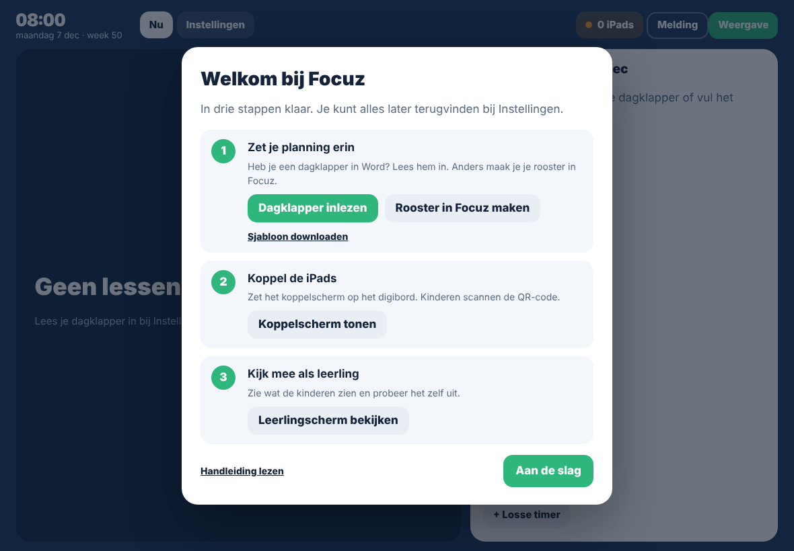
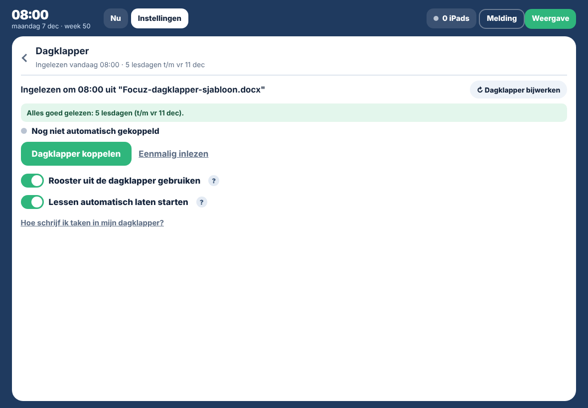
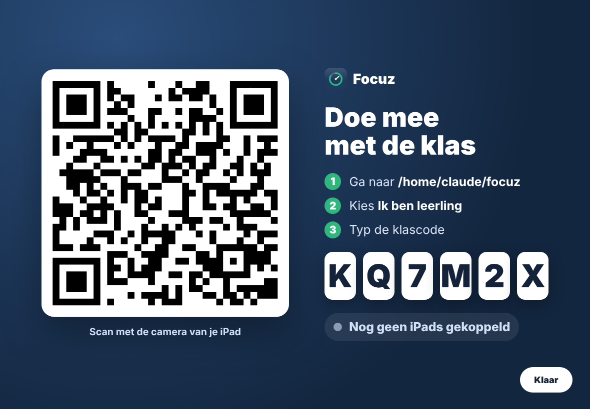
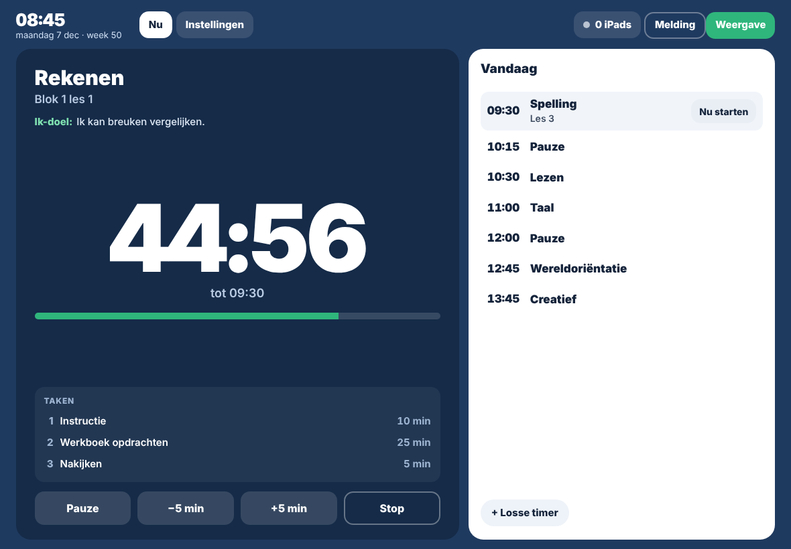
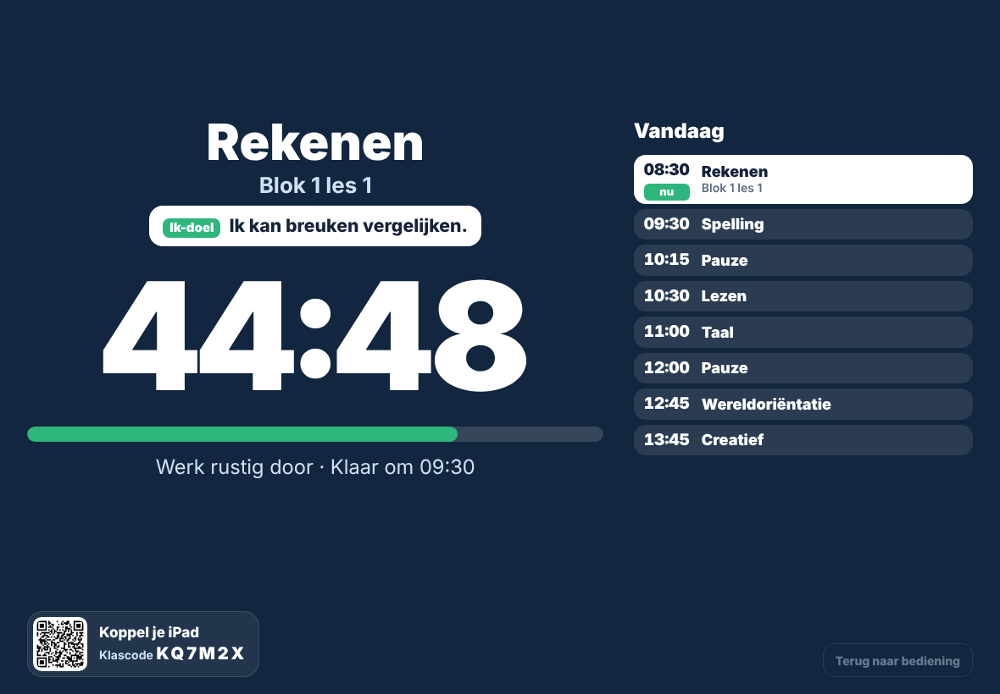
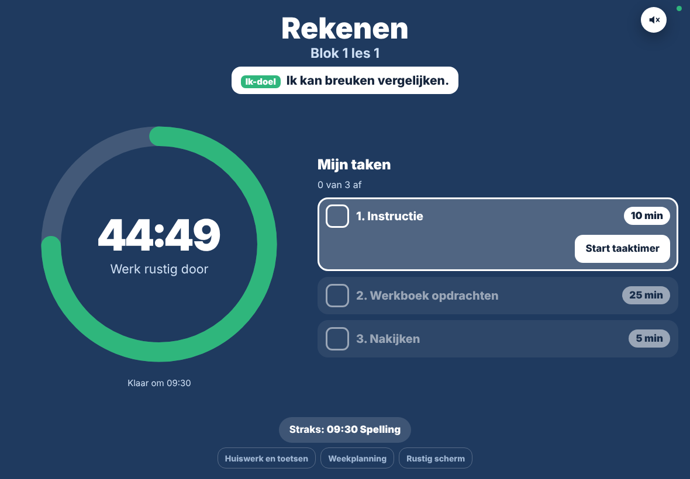
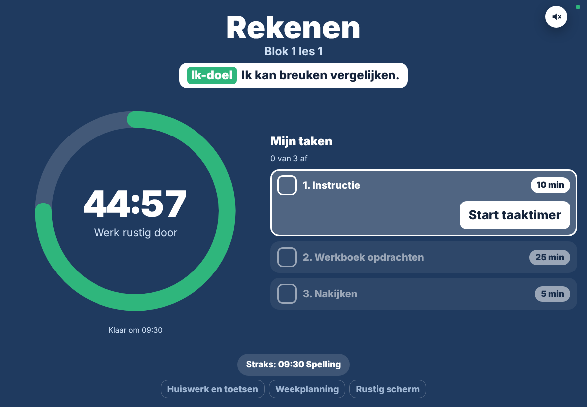

1Starten
Open sandromeertens.github.io/Focuz op je laptop of iPad en kies Ik ben leerkracht. Gebruik je Focuz al op een ander apparaat? Typ dan je klascode, zodat je iPads gekoppeld blijven. De startgids helpt je daarna in drie stappen op weg.
Eerst rondkijken zonder klas? Kies op de startpagina Eerst even proberen. Je krijgt dan een voorbeeldrooster en er wordt niets gekoppeld.
Focuz openenProbeerstand
2Je planning erin zetten
Met een dagklapper in Word: ga naar Instellingen → Dagklapper en kies je bestand. Op een computer met Chrome of Edge kun je hem koppelen; dan werkt Focuz vanzelf bij als je je dagklapper opslaat. Op een iPad kies je Dagklapper bijwerken na een wijziging.
Focuz zoekt per dag een tabel met de kolommen Tijd en Vak (en liefst Leerstof en Lesdoel), met erboven de dag en datum, bijvoorbeeld Maandag 7 december. In Leerstof zet je taken met een puntkomma ertussen:
Les 4; Instructie (10 min); Werkboek (25 min); Nakijken (5 min); klaar: Gynzy
De tekst zonder minuten wordt de titel, klaar: wordt de klaaropdracht en het lesdoel wordt het ik-doel. Een rij met vak Ochtend vult het ochtendscherm. Een tabel met Vak · Wat ga je doen · Voor wanneer wordt de lijst met huiswerk en toetsen.
Geen dagklapper? Kies Instellingen → Rooster in Focuz. Zet per dag je lessen erin; met één knop kopieer je een dag naar alle dagen. De taken komen uit Vaste taken per vak.

3iPads koppelen
Tik bovenin op 0 iPads en kies iPads koppelen. Het koppelscherm komt groot op het digibord. Kinderen scannen de QR-code met de camera, of gaan naar het adres en typen de klascode. De teller laat zien hoeveel iPads er binnen zijn. Laat ze Focuz op het beginscherm zetten (Delen → Zet op beginscherm).

4Lesgeven
Bij Nu zie je de les van dit moment: de tijd, het ik-doel, de taken en hoeveel iPads klaar zijn. Lessen starten vanzelf op de tijd uit je rooster. Met Pauze, −5 min, +5 min en Stop stuur je bij. Melding zet een bericht op alle iPads, zoals Kom naar de kring; eigen meldingen bewaar je als vaste knop.
Via Weergave zet je het Digibord klaar (groot klasscherm) of bekijk je het Leerlingscherm zoals een kind het ziet.


5Wat de leerling ziet
De leerling ziet het vak, het ik-doel, een rustige klok en een lijst met taken om af te vinken, elk met eigen minuten. Wie klaar is, ziet de klaaropdracht. Onderaan: Huiswerk en toetsen, Weekplanning en Rustig scherm (een stoplicht in plaats van een klok). Voor jonge kinderen zet je bij Klas en iPads de grote letters aan.


6Handig om te weten
- Reservekopie: je instellingen staan in je browser. Maak bij Instellingen → Reservekopie af en toe een kopie en zet die in OneDrive.
- Planning thuis: bij Huiswerk en toetsen kopieer je een link voor ouders. Zij zien alleen het huiswerk en de toetsen.
- Ander apparaat: gebruik bij Klas en iPads de knop Klascode van ander apparaat gebruiken, dan blijven je iPads gekoppeld.
- Uitleg: achter veel instellingen staat een ? met een korte uitleg.
- Kind zit in de verkeerde klas? Houd op de iPad het groene bolletje rechtsboven 3 seconden ingedrukt om een andere klascode in te voeren.
?Vragen of problemen
Kies in Focuz Instellingen → Hulp en uitleg → Vraag of probleem doorgeven. Er opent een e-mail met de gegevens die nodig zijn om je te helpen.